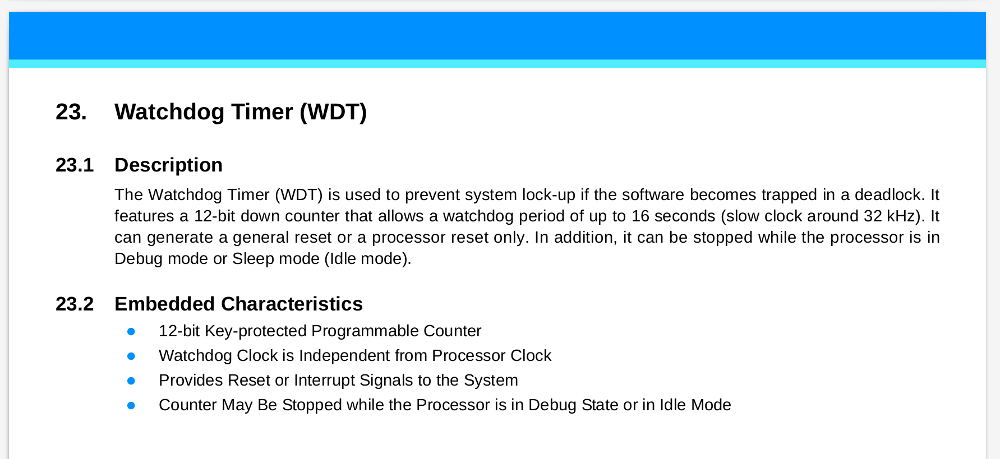
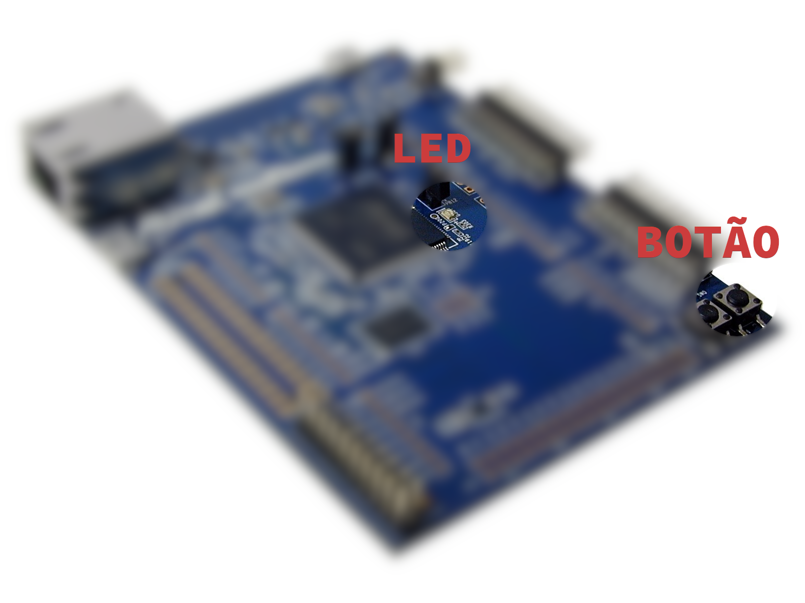

LAB - PIO
Pasta: /1-PIO-IO |
|---|
Data LIMITE para entrega: 23/08/22 - 23h59 |
Info
Os laboratórios são individuais e cada aluno deve ter um repositório com todas as enteegas, o repositório deve ser criado pelo classroom usando o link a seguir:
Entrega
Ao final desse laboratório você deve ser capaz de controlar e ler pinos digitais do microcontrolador a fim de podermos acionar saídas (LEDs/ Buzzers/ motores) e lermos entradas (botões/ sensores/ ...).
Ao final do laboratório vocês terão:
- Um LED piscando a cada segundo
- A leitura de um botão (entrada)
- LED acionado pelo botão
Feito esse lab já da para começar a APS 1 onde vocês terão que desenvolver um sistema embarcado que reproduz uma música monofonia.
Laboratório
O código exemplo que será utilizado nesse laboratório já se encontra no repositório criado pelo classroom (1-PIO-IO) e foi criado para ser o mais “limpo” possível, inclusive, faltando algumas bibliotecas básicas para a compilação.
O Laboratório será feito em duas partes:
Parte 1:
- Inserir drivers no projeto (ASF)
- Configurações básicas do microcontrolador (uC): clock e watchdog timer
- Configurar PIO para ACIONAR o pino conectado ao LED
- Controlar pino para fazer o LED piscar
Parte 2:
- Configurar o PIO para LER o pino do botão em modo entrada
- Ler o botão e agir sobre o LED
Inicializando e configurando ASF
Já com o Microchip Studio aberto verifique o conteúdo do arquivo main.c o mesmo deve estar praticamente vazio salvo comentários, inclusão do arquivo asf.h e duas função init e main.
#include "asf.h"
// CÓDIGO OMITIDO
// Função de inicialização do uC
void init(void) {
}
/************************************************************************/
/* Main */
/************************************************************************/
// Funcao principal chamada na inicalizacao do uC.
int main(void) {
init();
// super loop
// aplicacoes embarcadas não devem sair do while(1).
while (1)
{
}
return 0;
}
O arquivo header asf.h é criado e atualizado automaticamente pelo Microchip Studio e contém os frameworks/drivers inseridos no projeto. O Advanced Software Framework (ASF) que é uma camada de abstração do acesso ao hardware, possibilitando que configuremos partes específicas do uC em um nível de abstração intermediário.

Note
Pense no ASF como uma biblioteca de códigos, nela podemos encontrar drivers para os diversos periféricos do microcontrolador e outras coisas que vão nos ajudar a desenvolver diferentes projetos.
A função init será utilizada para inserirmos códigos que farão a inicialização do uC e configuração correta dos periféricos e pinos. Já a função main é a primeira função a ser executada no uC (devido a linguagem C) e será a orquestradora de todo o sistema, como ilustrado a seguir:
main(){
// inicialização CLK
// inicialização PMC
// inicialização PIO
init();
while(1){
// Lógica
}
}
Modificando o ASF
No Microchip Studio abra o ASF Wizard clicando na barra superior em: ASF 
ASF Wizard. Após um tempo (sim demora para abrir) uma janela deve abrir contendo: a esquerda uma lista dos possíveis drivers que podem ser utilizados para o microcontrolador e na coluna da direita os drivers/bibliotecas já inseridas na solução.
Info
No Microchip Studio um projeto contém uma cópia dos códigos das bibliotecas utilizadas, se você editar essa cópia novos projetos não serão impactados.
As seguintes bibliotecas já estão selecionadas e incluídas no projeto:
- Generic board support (driver)
- drivers de compilação para o uC da placa
- System Clock Control (service)
- funções para controle do clock do uC
Será necessário adicionar as seguintes bibliotecas (APIs/ drivers) a esse projeto:
Inicialização do uC
Antes da execução do nosso código é necessário realizarmos configurações no uC que irão preparar o core. Essas configurações variam de uC para uC e podem incluir a configuração de:
- clock
- memória de execução / cache
- Desativar funcionalidades específicas
- terminal para debug (printf)
No nosso caso iremos começar configurando o clock do uC e desativando o WatchDog Timer.
A função sysclk_init() é responsável por aplicar as configurações do arquivo config/conf_clock.h no gerenciador de clock do microcontrolador, que está configurado para operar em300 MHz.
Já a linha WDT->WDT_MR = WDT_MR_MDDIS faz com que o watchdog do microcontrolador seja desligado.
Info
WatchDog Timer como o próprio nome diz é um cão de guarda do microcontrolador. Ele é responsável por verificar se o código está 'travado' em alguma parte, causando o reset forçado do uC.
O whatchdog timer deve ser ativado só nos estágios finais de desenvolvimento de um produto.

Pino como saída (output)
Para configurarmos um pino como saída será necessário seguirmos os passos a seguir:
- Identificar o pino a ser controlado (extrair dados do manual/ placa/ projeto)
- Exportar para o código informações do pino
- Ativar/Energizar o periférico (PIO) responsável pelo pino
- Configurar o PIO para controlar o pino como saída
- Controlar o pino (high/low).
Dados do pino
Antes de configurarmos um pino como entrada (botão) ou saída (LED) é necessário descobrimos qual pino iremos controlar, para isso devemos verificar o manual da placa (manuais/SAME70-XPLD.pdf) para saber quais pinos possuímos disponíveis para uso. No caso da nossa placa, possuímos um pino conectado a um botão e outro pino conectado ao LED (já vieram montados na placa).

Todos os pinos digitais desse microcontrolador (em outros uC pode ser diferente) são conectados ao um periférico chamado de Parallel Input/Output Controller (PIO), esse periférico é responsável por configurar diversas propriedades desses pino, inclusive se será entrada ou saída (configurado individualmente). Cada PIO pode controlar até 32 pinos (depois veremos o porque disso), e cada pino está conectado a um único PIO.
Cada PIO possui um nome referenciado por uma letra: PIO A ; PIO B; PIO C;.... E cada pino possui um número único dentro desse PIO, por exemplo PIOA11 referencia o "pino 11" do "PIOA". Outra notação utilizada no manual é PA11, que representa a mesma coisa.
SAME70-XPLD.pdf
A secção 4.4.3 LED do SAME70-XPLD
descreve como o LED do kit de desenvolvimento foi utilizado na placa.

Podemos sintetizar as informações do PIO que controla o pino na tabela a seguir:
| SAME70-XPLD | PIO | Index | ID_PIO |
|---|---|---|---|
| LED | PIOC | 8 | 12 |
Agora será necessário transcrever essas informações para o nosso código em C, para isso iremos usar um recurso de C chamado define
#define
#define em C é uma macro, ou seja, é um recurso de C que só existe
em tempo de compilação, o define é diferente de uma costante
pois o compilador não irá alocar um endereço de memória para ela.
Antes de compilar o programa, o compilador irá varrer o seu código fonte
e substituir todos os defines pelos valores definidos.
Pense nisso como um recurso que facilita a vida do programador.
Função init()
Vamos implementar os códigos necessários para configurarmos o pino como saída na função init
PMC
Antes de podemos configurar um PIO para controlar um pino é necessário ativarmos esse periférico. A maioria dos periféricos do SAME70 inicializam desligados, isso é feito para: diminuir o gasto energético; e impedir a execucão de um periférico que não foi configurado.
Info
O Power Managament Controller (PMC) é o periférico responsável por gerenciar energia de outros periféricos, isso é feito via a liberação ou não do clock para os periféricos. O PMC possui também diversas outras funcionalidades, como descrito no manual do microcontrolador (SAME70 Datasheet):

Cada periférico do uC possui um ID de identificação (sec 13 SAME70 Datasheet) que é utilizado para indicar ao PMC e ao NVIC (veremos futuramente) qual periférico estamos nos referindo. A seguir uma parte dessa tabela extraída do datasheet.

Para evitar esse processo de ficar verifincando no manual o ID do periférico, podemos usar ID_PIOC no código:
#define LED_PIO_ID ID_PIOC // ID do periférico PIOC (controla LED)
O ASF possui esses defines que facilitam muito o desenvolvimento e minimizam erros.
O PMC possui diversas funções, estamos agora interessados naquela que ativa um periférico. Essa função é a pmc_enable_periph_clk(uint32_t ul_id) que recebe como parâmetro o ID do periférico que queremos ativar.
Tip
Notem que estamos usando o define LED_PIO_ID e não o valor 12 (id do periférico), a questão é que no fim é a mesma coisa, mas o uso de LED_PIO_ID deixa o código mais claro.
Configurando o pino do LED
Todo pino no PIO é inicializado em modo entrada, para usarmos como saída será necessário indicarmos ao PIO. Para isso, usaremos a seguinte função pio_set_output(...), definida no ASF do SAME70.
Notem que a função recebe como parâmetro o PIO e a máscara LED_PIO_IDX_MASK (que representa qual pino do PIO será configurado). Veremos mais detalhes disso no próximo laboratório.
A função pio_set_output() possui os seguintes parâmetros:
void pio_set_output ( Pio * p_pio,
const uint32_t ul_mask,
const uint32_t ul_default_level,
const uint32_t ul_multidrive_enable,
const uint32_t ul_pull_up_enable
);
Sendo:
- p_pio Pointer to a PIO instance.
- ul_mask Bitmask indicating which pin(s) to configure.
- ul_default_level Default level on the pin(s).
- ul_multidrive_enable Indicates if the pin(s) shall be configured as open-drain.
- ul_pull_up_enable Indicates if the pin shall have its pull-up activated.
Tip
Após todas as etapas anteriores sua função init() deve ter ficado como a seguir:
// Função de inicialização do uC
void init(void){
// Initialize the board clock
sysclk_init();
// Disativa WatchDog Timer
WDT->WDT_MR = WDT_MR_WDDIS;
// Ativa o PIO na qual o LED foi conectado
// para que possamos controlar o LED.
pmc_enable_periph_clk(LED_PIO_ID);
//Inicializa PC8 como saída
pio_set_output(LED_PIO, LED_PIO_IDX_MASK, 0, 0, 0);
}
Controlando o LED
Uma vez que as configurações gerais do uC já foram realizadas (clock e WDT) e que o periférico PIOC8 já está pronto para acionar o LED (ou o que estiver conectado nele) podemos começar a fazer nossa implementação na função main. Duas são as funções que iremos usar para acionar ou limpar um determinado pino:
// coloca 1 no pino do LED.
pio_set(LED_PIO, LED_PIO_IDX_MASK);
// coloca 0 no pino do LED
pio_clear(LED_PIO, LED_PIO_IDX_MASK);
Analogia com o Arduino
No arduino esse mesmo código seria escrito da seguinte forma:
// the setup function runs once when you press reset or power the board
void setup() {
// initialize digital pin LED_BUILTIN as an output.
pinMode(LED_BUILTIN, OUTPUT);
}
// the loop function runs over and over again forever
void loop() {
digitalWrite(LED_BUILTIN, HIGH); // turn the LED on (HIGH is the voltage level)
delay(1000); // wait for a second
digitalWrite(LED_BUILTIN, LOW); // turn the LED off by making the voltage LOW
delay(1000); // wait for a second
}
O Arduino esconde a função main(), que seria:
void main(void){
init();
setup();
while(1){
loop();
}
}
Note que a função setup() do arduino precede de uma oura função init() que possui funcionalidade parecidas com a nossa de inicializar o clock do sistema e desabilitar o WDT.
Pino como entrada (input)
Para configurarmos um pino como entrada será necessário:
- Identificar o pino a ser controlado (extrair dados do manual)
- Exportar para o código informações do pino
- Ativar o periférico (PIO) responsável pelo pino
- Configurar o PIO para controlar o pino como entrada
- Ler o valor do pino.
Extraindo dados do manual
O kit de desenvolvimento SAME7-XPLD possui dois botões, um deles reservado para o reset do microcontrolador e outro de uso geral.
Exportando informações para o código
Agora precisamos fazer a ponte entre o mundo externo e o firmware que será executado no microcontrolador, pela tabela anterior insira e complete os defines a seguir no main.c (perto dos defines do LED).
Função init()
Agora é necessário:
- Ativarmos o PIO no PMC
- Configurarmos o novo pino como entrada
- Ativamos PULL-UP no pino
PMC PIO
Com os defines "definidos" podemos ativar o clock do PIO que gerencia o pino, para isso insira na função de inicialização init() após a inicialização do LED.
Configurando o pino como Input
Agora é necessário configurarmos o BUT_PIO para gerenciar o BUT_PIO_IDX como uma entrada, para isso usaremos a função pio_set_input() definida na biblioteca da ASF:
// configura pino ligado ao botão como entrada com um pull-up.
pio_set_input(ARG0, ARG1, ARG2);
PULL-UP
Para esse pino funcionar é necessário que ativemos o pull-up nele. Pull-up é um resistor alimentando para VCC, ele faz com que o valor padrão do pino seja o energizado.
Para ativarmos o pull-up basta chamar a função: pio_pull_up() com os parâmetros correto. A função está detalhada na documentação do ASF.
Lendo o botão
Para lermos um valor de um pino, que já foi configurado como entrada, devemos utilizar alguma das funções fornecidas no ASF de interface com o PIO, procure por ela na documentação do PIO.
Implementando a lógica
Vamos usar o botão para fazer alguma coisa? Agora conseguimos acionar um pino (LED) e ler um pino (botão).
Praticando (entrega obrigatória)
Preencher ao finalizar o lab